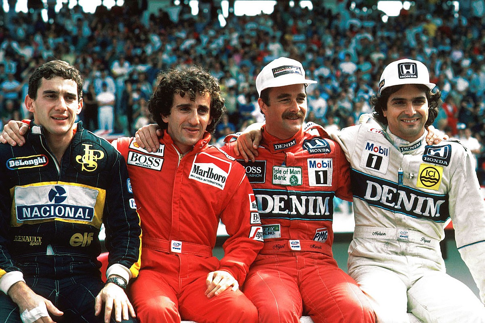

Campeonato de 1986 contendo Ayrton Senna pela Lotus, Alain Prost pela McLaren, Nigel Mansell
pela Williams e Nelson Piquet pela Williams
Em um total de 75 temporadas, 34 pilotos conquistaram o título mundial de pilotos, sendo o alemão Michael
Schumacher e o inglês Lewis Hamilton, os maiores vencedores com 7 títulos cada um. O alemão Michael
Schumacher também detém o recorde de títulos consecutivos, com 5 vitórias entre 2000 e 2004. Além disso,
também é o que garantiu o título com mais corridas de antecendência: 6 em 2002.
Por nacionalidade
Lista de campeões da Fórmula 1 por Nacionalidade
País
Títulos
Pilotos
Piloto(Títulos)
Reino Unido
20
10
Lewis Hamilton (7), Jackie Stewart (3), Jim Clark (2), Graham Hill (2), Mike Hawthorn (1),
John Surtees (1), James Hunt (1), Nigel Mansell (1), Damon Hill (1), Jenson Button (1)
Países Baixos
4
1
Max Verstappen (4)
Nova Zelândia
1
1
Denny Hulme (1)
Itália
3
2
Alberto Ascari (2), Nino Farina (1)
França
4
1
Alain Proist(4)
Finlândia
4
3
Mika Häkkinen (2), Keke Rosberg (1), Kimi Räikkönen (1)
Estados Unidos
2
2
Phil Hill (1), Mario Andretti (1)
Espanha
2
1
Fernando Alonso (2)
Canadá
1
1
Jacques Villeneuve (1)
Brasil
8
3
Nelson Piquet (3), Ayrton Senna (3), Emerson Fittipaldi (2)
Áustria
4
2
Niki Lauda (3), Jochen Rindt (1)
Austrália
4
2
Jack Brabham (3), Alan Jones (1)
Argentina
5
1
Juan Manuel Fangio (5)
Alemanha
12
3
Michael Schumacher (7), Sebastian Vettel (4), Nico Rosberg (1)